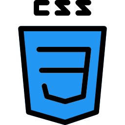
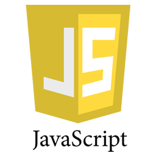
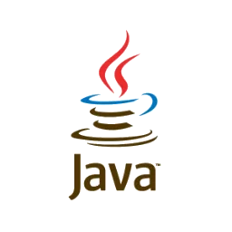
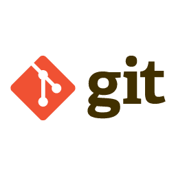
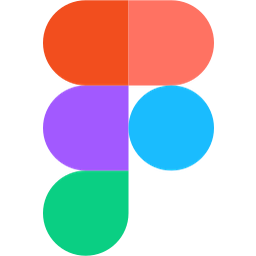

Estruturação semântica de páginas e conteúdo web.
Ola!
Herdilio Sebastiao Nguiliche
Estudante de Licenciatura em Informática e desenvolvedor em formação, focado na criação de aplicações web e soluções de software.
Sobre mim
Quem sou eu
Olá! Eu sou Herdilio Sebastião Nguiliche, estudante da Licenciatura em Informática, com foco no desenvolvimento de software.
Estou em constante aprendizagem e procuro sempre aprimorar os meus conhecimentos através de cursos, projetos, eventos e experiências práticas. Tenho maior interesse pelo desenvolvimento web, utilizando tecnologias como HTML, CSS e JavaScript, além de conhecimentos em Java e Python.
Atualmente, também estou a aprofundar os meus conhecimentos através de um curso de Desenvolvimento Web e Redes de Computadores.
Sou uma pessoa colaborativa, com facilidade para trabalhar em equipa e motivada por desafios. Gosto de transformar ideias em sites, aplicações e soluções de software, procurando evoluir continuamente como desenvolvedor.
Foto
Tecnologias
Ferramentas e linguagens com que trabalho no dia a dia dos meus projetos.

Estilização de interfaces e layouts responsivos.

Interatividade e lógica no lado do cliente.

Programação orientada a objetos e aplicações robustas.

Automação, scripts e análise de dados.

Controlo de versões do código-fonte.
Hospedagem de repositórios e colaboração em equipa.

Prototipagem e design de interfaces.
Projetos
Projetos desenvolvidos durante o meu processo de aprendizagem e evolução como programador.
SAFE SMS
App Android de deteção de fraude por SMS para o mercado moçambicano, com backend FastAPI e modelo de Machine Learning (Random Forest) para classificar mensagens suspeitas.
Ver projetoShopManager
Sistema de ponto de venda e gestão de produtos para lojas, com perfis distintos para Funcionário e Gerente, controlo de stock e emissão de recibos.
Ver projetoHabilitaMoz
Conceito de rede profissional e social pensado para Moçambique, onde cada utilizador pode assumir vários papéis em simultâneo — como estudante, empreendedor ou desenvolvedor.
Ver projeto